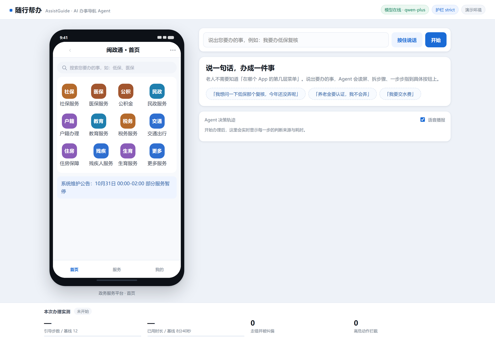
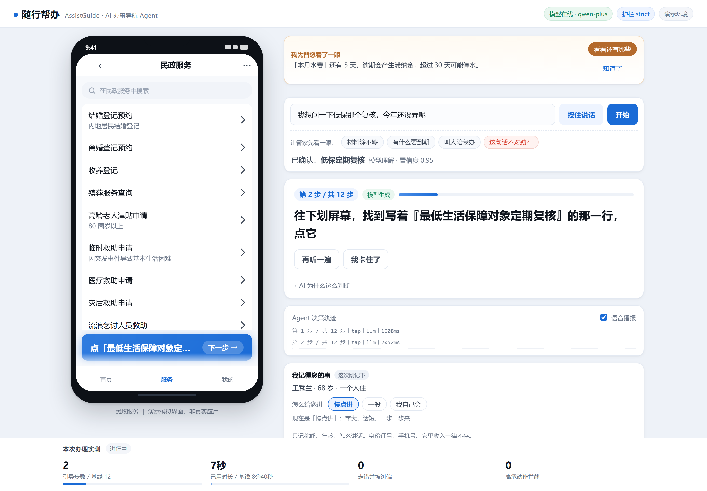
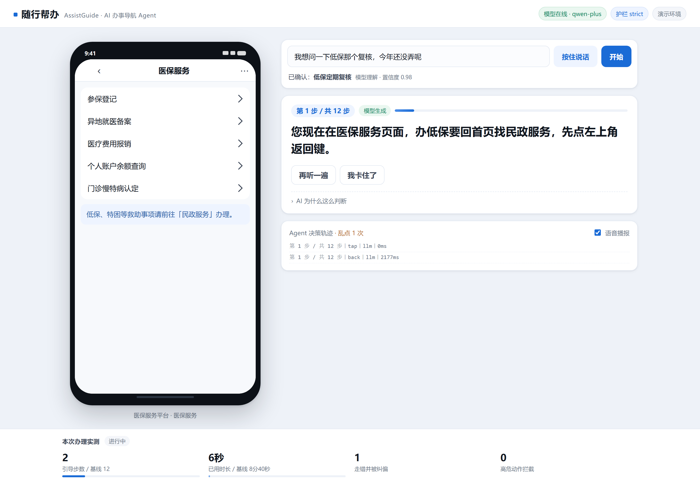
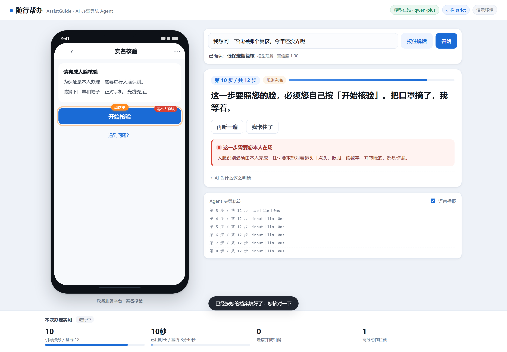
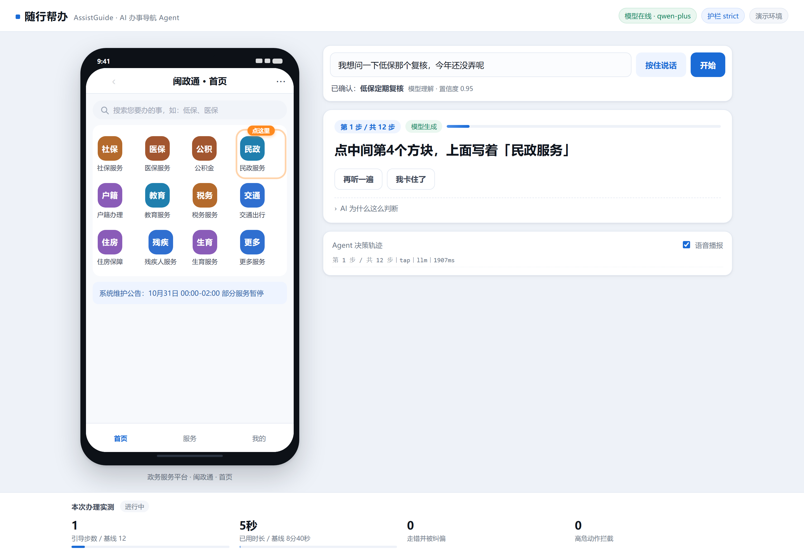
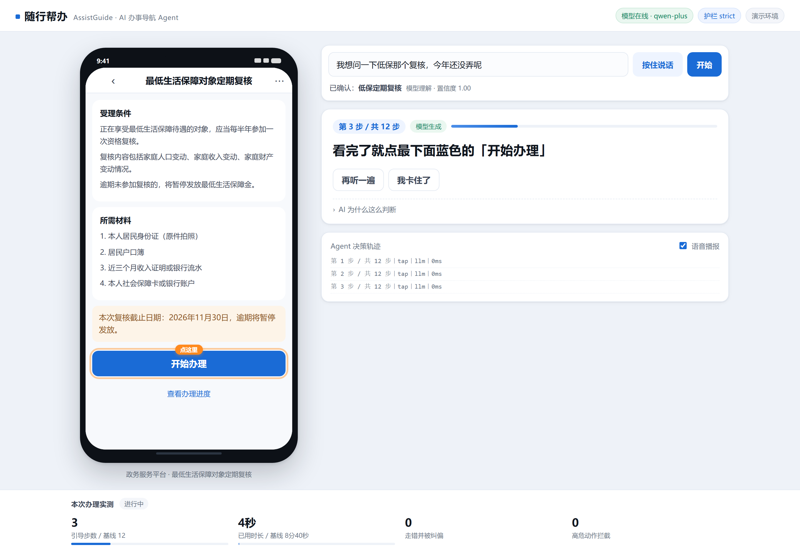
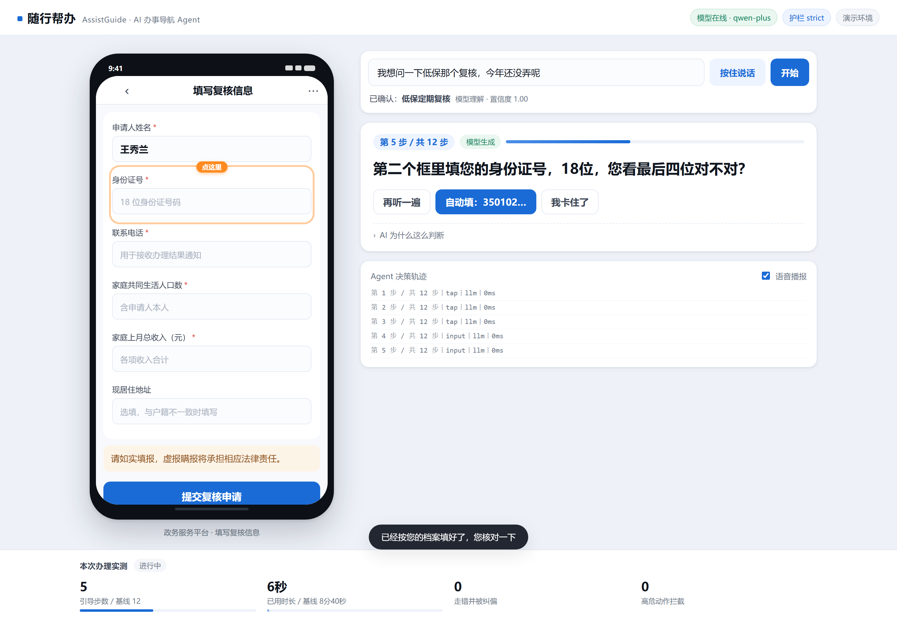
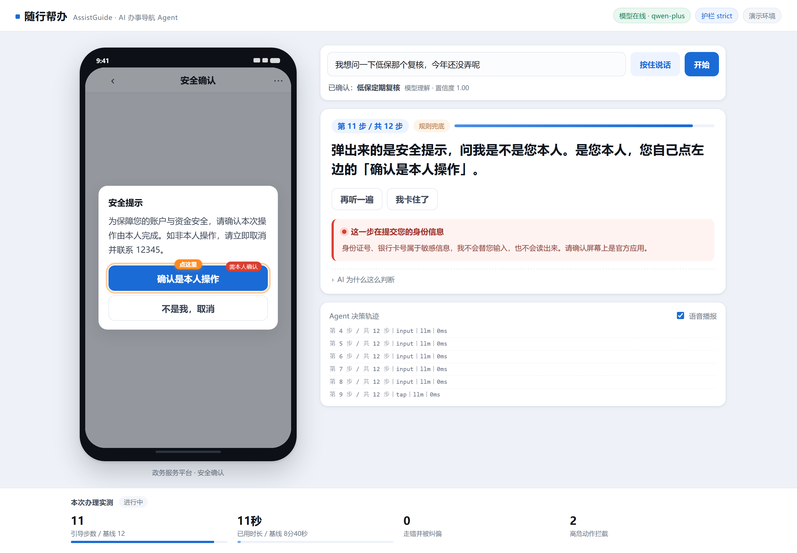

一句话定位：随行帮办是一个替数字弱势群体「看着屏幕带路」的 AI 办事导航 Agent。老人说一句口语，它就把模糊诉求翻译成可执行的跨应用步骤，逐屏指出该点哪一个按钮；走到人脸核验、支付、验证码这类高危环节，它会主动停手，把决定权交还给人。
它不是又一个政务问答客服，而是一个执行闭环的导航系统：意图理解 → 任务规划 → 屏幕定位 → 异常纠偏 → 人工兜底。
线上政务已经「能办」，但对 60 岁以上人群来说，办理过程本身成了一道新门槛。以「低保对象定期复核」为例，一位老人在省级政务 App 上要完成：
打开 App → 在 12 宫格里找到「民政服务」→ 在 24 项列表里翻到第 18 项 → 读完 3 段受理条件 → 点「开始办理」→ 填 5 个必填格 → 提交 → 完成人脸核验 → 确认风控弹窗 → 拿到受理编号。
这条路径上有四类典型失败，每一类都不会有人告诉他错在哪：
| 失败类型 | 真实表现 | 现有方案为什么救不了 |
|---|---|---|
| 入口迷失 | 点进「医保服务」，翻了半天发现没有低保入口 | 搜索框要求先会打字；帮助中心给的是图文教程，与他手机上的版本不一致 |
| 同名混淆 | 选了「临时救助申请」，与「低保复核」是两件事 | 热线客服只能听描述，看不到他的屏幕 |
| 表单卡壳 | 「家庭共同生活人口数」到底算不算自己？ | 表单没有解释，填错被打回重来 |
| 高危环节失守 | 人脸连续失败三次后，被陌生电话引导去「转账验证」 | 没有任何系统在他说「我不会」的那一刻出现 |
现有 AI 助手大多停在「查询 + 回答」：给出链接、给出条件、给出流程。但老人缺的不是信息，是此刻这一步该点哪里。随行帮办把输出单位从「一段话」缩小到「一个控件」，并在每一次输出上附加三样东西：为什么这么判断（可解释）、点错了怎么办（可纠偏）、这一步能不能代做（可信任）。
长期形态是一个悬浮在系统层之上的「伴随式助手」：以无障碍服务读取当前界面，在屏幕上层叠一个高亮框与一句话指令，语音同步播报。本次参赛交付的是可运行、可演示、可验证的完整原型：Web 端 1:1 还原政务 App 的屏幕库 + 真实可调用的 Agent 后端，评委可现场任意输入口语、任意点错，观察 Agent 如何纠偏。

| 用户 | 典型画像 | 此刻的处境 | 他真正想要的 |
|---|---|---|---|
| 主要用户 办事老人 |
68 岁，独居，初中文化，用智能手机只会接打电话、看短视频、收红包 | 被告知「低保要复核了，手机上就能办」，但打开 App 就不知道点哪里 | 有人陪着他点完，且别让他点错、别被骗 |
| 次级用户 异地子女 |
在外地工作，父母在老家，每周视频一次 | 电话里说不清「你先点那个蓝色的」，远程指导半小时仍失败 | 一个能替他「在场」的东西，出问题能收到通知 |
| 机构用户 社区/窗口人员 |
一人对接上百位低保对象，重复回答同样的问题 | 大量本可线上办结的事项被挤到窗口，电话被同一类问题占满 | 把简单咨询分流掉，只接真正需要人工的个案 |
同一套能力可以平移到任何「多级菜单 + 表单 + 强校验」的数字服务中，这也是产品的可扩展性所在：
低保复核、养老待遇资格认证、高龄津贴申请、残疾人两项补贴
异地就医备案、预约挂号、门诊慢特病认定、电子健康卡申领
水电气缴费、社保卡金融账户激活、供暖报停（含支付护栏）
银行卡挂失、养老金到账查询、大额转账前的反诈确认
王秀兰，68 岁，福州鼓楼区，独居。女儿在上海。10 月 26 日社区通知她「低保要复核，月底前在手机上办」。她打开闽政通，点了「医保服务」，翻了五分钟没找到；又点「更多服务」，进了长列表，看到「临时救助申请」，以为是同一件事，填到一半被要求上传「突发事件证明」，放弃了。她给女儿打电话，女儿说「你先点那个蓝色的」——她 screen 上有六个蓝色的按钮。
11 月 30 日截止。如果没复核，低保金会暂停发放。
这就是产品要接住的那一分钟。
五个能力构成一条闭环，缺任何一个都会让「导航」退化成「查询」。
老人不会说「最低生活保障对象定期复核」。他会说「低保那个年审」「政府给的钱要签个字」「补助今年还没弄」。系统需要从句子里抽出事项、地域、身份、时限、缺失要素，并且先复述再动手——「您要办的是：低保复核，对吗？」——避免南辕北辙。
样例「我想问一下低保那个复核，今年还没弄呢」→ 事项 allowance.renew，置信度 0.95，复述「低保定期复核」，附缺失要素清单（姓名、身份证、电话、人口、收入）。
每个事项在知识库中沉淀为一张确定性流程图：12 个节点，每个节点声明「在哪个屏幕、让用户动哪个控件、动了之后到哪、失败了退到哪」。流程图既是执行依据，也是模型输出必须通过的白名单。
知识库没收录的事怎么办？让模型照着屏幕库现场排。用户说「我想申请高龄老人津贴」，模型给出「首页 → 民政服务 → 高龄老人津贴申请」的步骤序列，复述行下方随即出现「AI 现场规划」标记。而当它试图借用低保复核的表单页继续往下走时，校验器判定「这块屏幕跟这件事不是一码事」，就地截断，改为播报材料清单并给出求助通道。宁可少走一步，不可走错一步——这是 AI 进入决策层之后必须保留的刹车。
Agent 读取当前屏幕的可读结构（标题、列表项、按钮文案、表单标签），定位目标控件，输出高亮框 + 一句不超过 35 字的口语指令 + 同步语音。指令必须引用屏幕上的原字，例如「点最下面蓝色的『开始办理』」，而不是「进入办理页面」。

老人点错时，真实应用会照常跳转——产品必须接受这个事实，然后把人拉回来。系统比对「当前屏幕」与「应到达屏幕」，不一致即切换为纠偏模式，并给出针对性的解释而不只是「返回」：
「您现在在『医保服务』里，这里没有办低保的地方。按左上角返回，我重新带您走。」
「这是『临时救助申请』，是给还没吃低保的人用的。您本来就有低保，办的是『复核』，不是这个。」

当同一屏反复乱点、或连续求助，系统判定为卡死，生成一段带上下文的话术，老人照念即可，不用在电话里重新解释一遍：
「您好，我是王秀兰，今年 68 岁，住在福建省福州市鼓楼区。我要办的是『最低生活保障（低保）对象定期复核』，身份证后四位是 0023。我自己在手机上操作不了，能不能麻烦您指导一下，或者告诉我最近的窗口在哪里？」
本产品对「AI 参与核心服务」的理解是：AI 必须直接改变用户在这一刻能做成什么，而不是在流程外面套一层聊天框。因此模型承担了五件事，且明确不承担第六件事。
| 环节 | 模型做什么 | 为什么必须由模型做 |
|---|---|---|
| 意图理解 | 把方言口语、省略句、错误命名归一为结构化事项与槽位 | 老人的表达是开放集合，规则枚举无法覆盖；且需要「说错名字也能听懂」的容错 |
| 路径规划 | 事项库没收录的事，照着屏幕库现场排一条能走通的步骤序列 | 可办事项是开放集合，而屏幕是有限集合。路径可以由模型推，但必须落在已知屏幕上——这是 AI 真正进入决策层的地方 |
| 话术生成 | 把系统术语翻译成子女口吻： 「实名认证」→「照一下您的脸」 「异地就医备案」→「跟医保打个招呼」 |
同一句指令对不同数字素养的老人需要不同密度；模板话术必然带官腔 |
| 异常解释 | 结合当前屏幕语义，解释「你为什么会走错」「这个页面为什么不是你要的」 | 走错路径是长尾组合，无法为每一种错法预先写文案 |
| 口语填表 | 「我家就我一个人，上个月领了九百八」→ 人口 1、月收入 980 | 老人不会打字，也不理解「家庭共同生活人口数」的口径 |
| 不做 | 不代做任何不可逆动作；不改变已收录事项的既定路径 | 见 4.2 |
产品采用「AI 排路，契约把关，规则兜底」的分工，按事项是否已收录分成三档：
4 件深度打磨的事项由确定性流程图决定「这一步该点哪个控件」。输入是屏幕 id + 已完成节点 + 已填槽位，输出唯一解。毫秒级、可测试、可复现。模型只改这里的措辞。
模型照着屏幕库现场排出步骤序列，但每一步都要过三道闸：屏幕与控件必须真实存在、屏幕语义必须与事项相关、护栏只能加不能减。过不了就在那一步截断。
话术必过 zod 结构校验、高危词过滤、长度限制；计划必过契约校验。任一不过即回退模板或退回「未收录」话术。
这样设计的直接收益是演示永不翻车：模型超时、返回非 JSON、说出违规内容、乃至指了一个不存在的按钮，系统都会在 100ms 内退回规则话术或标准应答，用户无感。断网状态下，4 个已收录事项的全流程依然可以走完。
老人不会只在「要办事」时打开 App。他会问「什么是教育服务」「高龄津贴要什么条件」「低保复核要带什么材料」。这些问题若被回一句「这件事我还没学会」，产品在他眼里就只是台点按钮的机器。因此系统把问答与办理做成两条并列通道：
| 环节 | 做什么 | 为什么这样设计 |
|---|---|---|
| 意图判别 | 用疑问特征（什么／怎么／多少／要带／吗）判「在问」还是「要办」；带「我要办／帮我办」等明确委托的仍按办理处理 | 老人常把「问一下」和「帮我弄」混着说，判错的代价是演示主线被答成一堆科普 |
| 事实锚点 | 先检索内置知识库，把命中的条目作为已知事实塞进提示词，模型只能在此基础上组织语言 | 模型自由发挥最容易编金额、编时限；给事实比给约束更有效 |
| 答案底线 | 金额、时限、资格线一律说「以当地公布为准」；不做医疗诊断与法律结论；涉及转账、验证码先反诈 | 这类错误对老人是不可逆的实际损失 |
| 转接办理 | 答案里带上「这件事能办」的事项 id，界面出现「直接带着我办」，点一下即进入逐屏引导 | 问完往往就想办，不该让他从头再说一遍 |
| 离线兜底 | 模型不可用时，知识库的 13 条常见问题照常作答，界面标注「知识库」 | 断网也要答得上话，这是可用性的底线 |
同时补全了应用本身的可信度：底部「服务」「我的」不再是装饰。服务大厅按「我的常用 + 人生阶段一件事 + 主题宫格」组织；我的页含实名信息卡、办件进度、我的材料（身份证／户口簿／低保证明／银行卡）、家人代办与到期提醒；教育服务按学段与事项类型列出 8 项。三个标签页互相可达，未开始办事时也可以先翻一翻——老人本来就是先看再问。
对老年用户最大的风险不是「办不成」，而是「被代办」。因此系统把六类动作硬编码为必须本人确认，模型无权改写、无权代点：
| 护栏类型 | 系统行为 | 话术示例 |
|---|---|---|
| 资金支付 | 停手，念清金额与收款方，密码不看不问 | 「本期水费 128 块 4 毛。钱的事我不替您按，您看清金额和户号。」 |
| 生物特征 | 停手，说明必须本人在场，附反诈提示 | 「要照您的脸，必须您自己按。任何让您对着镜头点头、眨眼并转账的，都是诈骗。」 |
| 身份信息 | 停手，不代输入、不朗读证件号 | 「这一步在提交您的身份信息，请确认屏幕上是官方应用。」 |
| 验证码 | 停手，明确验证码只填进官方应用 | 「验证码只填在这个应用里。谁打电话要都不给。」 |
| 授权协议 | 停手，建议家人或窗口协助确认 | 「这份协议涉及您的权利，建议让家人陪您看完再同意。」 |
| 敏感信息 | 停手，提示环境安全 | 「请确认周围没有陌生人，屏幕没被别人共享。」 |

| 维度 | 没有 Agent | 有 Agent |
|---|---|---|
| 找到正确入口 | 12 宫格 + 24 项列表，靠反复试错 | 直接高亮到具体那一行 |
| 表单 5 个必填项 | 逐字手打，口径靠猜 | 按档案一键预填，老人只需核对 |
| 走错之后 | 不知道错在哪，可能一路错到放弃 | 当场识别、说明原因、带回正轨 |
| 卡死之后 | 打电话也说不清自己在哪一步 | 生成带上下文的话术，照念即可 |
| 高危环节 | 无人提示，电诈高发 | 系统级停手 + 反诈话术 |
后端按「领域 → 应用 → 基础设施 → 接口」四层组织，领域层不依赖任何框架，因此可以脱离 HTTP 单独测试。模型、埋点、时钟都以端口（interface）注入，替换实现时上层无感。
| 层 | 职责 | 关键文件 |
|---|---|---|
| 领域层 | 任务知识库、确定性流程、护栏规则、意图规则 | core/domain/* |
| 应用层 | 编排「理解 → 规划 → 引导 → 救援」，模型输出校验 | core/application/* |
| 基础设施 | DashScope 适配、JSONL 埋点、日志脱敏、配置校验 | infra/* |
| 接口层 | Fastify 路由、zod 入参校验、限流、静态托管 | server/* |
| 表现层 | 高保真手机模拟器 + Agent 控制台（React） | web/* |
前端渲染的「屏幕」与 Agent 读取的「屏幕」是同一份数据结构（shared/screens.ts）。这不是为了省事，而是为了消灭一类致命失败：AI 指了一个屏幕上不存在的按钮。
服务端在返回动作前会校验目标控件 id 是否真实存在于当前屏幕；契约测试进一步锁定「流程图的每个节点所指向的控件必须存在」。一旦有人改了控件 id 而忘记改流程，CI 立即失败。
三重校验之外还有一层「护栏不可改写」：涉及资金、生物特征、验证码等节点，模型的措辞会被完全绕过，只使用经过法务审阅的模板文案。
DashScope OpenAI 兼容端点（qwen-plus），实测 1.8–2.2s/次；8s 硬超时、不重试，超时即判定不可用并瞬时切规则通道——用户最长等待被锁死在 8s 内。
确定性流程图独立完成全部引导：决策内核 < 2ms，端到端 P90 0.11s，断网可用。
生成带上下文的话术 + 12345 热线，把「我不会」变成一句能说清的话。
每次决策落 JSONL：节点、来源、耗时、护栏命中、走错次数，可复盘、可统计。
| 约束 | 落地方式 |
|---|---|
| 类型安全 | TypeScript strict + noUncheckedIndexedAccess，前后端两套 tsconfig 分别校验 |
| 代码规范 | ESLint 9 flat config，禁用 any，强制类型导入 |
| 测试 | Vitest 106 项：护栏、规则引擎、知识库契约、AI 规划校验（契约/语义/护栏）、提问识别与问答过滤、屏幕与导航一致性、编排（假模型注入）、熔断降级、限流语义、无障碍适配、内存上限、埋点轮转、HTTP 契约 |
| 覆盖率 | 语句 91.2% / 分支 80.4%，核心领域层 98.6%（npm run test:coverage，v8 provider） |
| 安全 | 入参 zod 校验、64KB body 限制、240 次/分限流（超限返回 429 而非 500）、helmet 安全响应头、日志脱敏（身份证/手机号/姓名）、密钥仅服务端 |
| 交付 | GitHub Actions 在 Node 20/22 双版本跑 lint → typecheck → test → build → 端到端冒烟 |
以下为演示端的逐屏实录，评委可在现场任意输入口语、任意点错，观察系统的反应。
老人说「我想问一下低保那个复核，今年还没弄呢」。系统先复述为「最低生活保障（低保）对象定期复核」，并如实标注这句话的来源（模型理解或规则匹配）与置信度，然后才进入引导。右侧同时显示这次判断的依据、来源与耗时——来源为「规则兜底」时，说明模型通道当前不可用，系统已自动切换，功能不受影响。

llm 1967ms 说明这句话由模型改写，而「点哪个」由规则决定每一步只做一件事：一个高亮框 + 一句话。指令引用屏幕原字（「开始办理」「提交复核申请」），语音播报压缩到 20 字以内，符合老人听觉处理习惯。
对听力障碍用户，画像中的 hearingImpaired 会让服务端不再生成语音文案，卡片上的「再听一遍」自动替换为「纯文字模式」，判断依据里同步标注。同一套流程不依赖声音也能走完——这不是隐藏开关，而是走通整条链路的真实行为，有对应用例锁定。

进入表单后，Agent 逐格引导，并按档案一键预填：姓名、身份证、电话、人口、收入。老人只需核对，不必打字。当他说「我家就我一个人，上个月领了九百八」时，系统也能直接把口语转成人口 1、月收入 980。

人脸核验与风控弹窗是本流程的两个高危节点。系统不会代点，而是明确说明「为什么必须您自己来」，并附带反诈提醒。这是产品价值观最直接的体现，也是与其他「代办型」工具的分水岭。
人脸核验同时是真实体验而非一张提示卡：用户本人按下「开始核验」后，界面会调起前置摄像头，呈现圆形取景框与扫描动画，通过后才放行进入下一步；无摄像头或拒绝授权时自动降级为演示画面，流程不中断。本产品不采集、不上传、不存储任何影像。此外，相关性闸门保证闲聊、脏话等无关输入不会触发 AI 规划——系统宁可坦白「没听出要办什么事」，也不把无关的话硬安到一个事项上。

办理完成后，Agent 念出受理编号与预计办结时间，并提示「这页您截个图，或者我帮您存下来」——把数字结果转成老人能留存的形式。
| 事项 | 节点数 | 护栏 | 差异化能力 |
|---|---|---|---|
| 养老待遇资格认证 | 4 | 生物特征 | 把「去社保局排队」的误解当场纠正为「手机上照个脸」 |
| 异地就医备案 | 5 | 身份信息 | 解释「备案 ≠ 报销」，避免出院后才发现不能直接结算 |
| 生活缴费 | 4 | 资金支付 | 念清金额与收款方，阻止「免密支付」被误导开通 |
「可演示、可验证」是本赛道的硬指标。我们把它拆成三层：现场可演示、指标可测量、缺陷可复现。
评委不必相信任何截图：打开页面，任选一句示例口语或自行输入，手机模拟器与 Agent 控制台实时联动。故意点错、故意反复乱点、故意在支付页停留，都会触发不同分支。
| 指标 | 定义 | 采集方式 | 当前值 |
|---|---|---|---|
| 引导准确率 | Agent 指向的控件与目标控件一致的比例 | 契约测试 + 埋点比对 | 100%（12/12 节点） |
| 纠偏成功率 | 走错后 1 步内回到正轨的比例 | 埋点 rescue.triggered | 100%（演示用例） |
| 护栏命中 | 高危节点被拦截为「本人确认」的次数 | 埋点 guardrail.blocked | 低保流程 2 次 / 缴费流程 2 次 |
| 响应延迟 | 引导接口端到端耗时 | 埋点 guide.issued.latencyMs | 模型通道 P50 2.0s / P90 2.4s / max 2.7s（61 次样本）；改写缓存命中 0ms；规则通道端到端 P50 2.3ms / P90 6.1ms |
| 通道健康 | 模型不可用时能否自动切换并如实上报 | 熔断器 + /api/meta | 连续失败即熔断 60s，界面徽标变为「模型降级 · 规则兜底」 |
| 可用性 | 模型不可用时流程能否走完 | CI 冒烟（无密钥） | 可完整走完，全部走规则通道 |
测试用例本身就是「产品说明书」：护栏用例锁死了「什么话绝不能说」，契约用例锁死了「指的控件必须存在」，编排用例用假模型注入锁死了「模型抽风时系统怎么退」。任何人 clone 仓库，npm test 即可复现全部结论。
AccessibilityService；接口语义已对齐，属于工程实现工作量而非架构风险。| 条件 | 变化 |
|---|---|
| 政策 | 政务服务「适老化改造」已成为明确要求，多地要求政务 App 提供长辈版、无障碍通道 |
| 技术 | 大模型的中文口语理解与长上下文足够稳定，使「听懂老人说话」首次具备工程可行性 |
| 终端 | Android 无障碍服务、iOS 辅助功能提供了读屏与叠层的系统能力 |
| 需求 | 独居老人规模持续扩大，异地子女远程协助成为高频刚需 |
作为政务 App 的「长辈模式」内核，由平台方接入，直接服务存量用户。最容易获得规模，也最容易通过合规审查。
以「帮办机」或大堂助手形态落地，替代人工重复指导，把窗口人员释放到真正需要人的个案上。
面向异地子女的「远程陪办」服务：父母的每次办理进度、卡点、求助都可同步，按月订阅。
先做公益试点（社区、养老机构）积累真实数据与口碑，再向机构侧收取技术服务费，最后开放子女端订阅。
调用大模型没有壁垒。本产品的壁垒在三处：事项流程图库（每个事项的节点、口径、坑位都是实地梳理出来的）、纠偏策略库（走错的每一种方式对应不同话术）、可信交互设计（三个不做的边界）。这三样都随使用规模复利增长，且难以被一次性复制。
产品不假设自己永远正确。当模型不确定、屏幕无法识别、或用户连续三次没有进展时，系统会主动降低姿态——「您别急，我再说一遍」，并在必要时直接建议转人工。对一个服务老年人的产品来说，承认不知道，比假装知道更重要。
| 接口 | 用途 | 关键返回 |
|---|---|---|
POST /api/session | 创建会话 | 会话 id、用户画像、事项清单 |
POST /api/intent | 口语 → 结构化意图 | 事项 id、置信度、复述、缺失槽位、来源 |
POST /api/guide | 当前屏 → 下一步动作 | 动作类型、目标控件、大字指令、播报、护栏、判断依据、进度 |
POST /api/slots/extract | 口语 → 表单值 | 槽位键值、置信度、来源 |
POST /api/rescue | 生成求助话术 | 话术文本、热线号码 |
GET /api/session/:id/metrics | 本次指标 | 步数、走错、护栏、转人工、耗时、是否完成 |
| 名称 | 口径 |
|---|---|
| 引导步数 | 一次办理中 Agent 下发引导动作的次数，含纠偏动作 |
| 走错并被纠偏 | Agent 判定当前屏幕偏离流程并下发 back 动作的次数 |
| 高危动作拦截 | 命中六类护栏、被降级为「本人确认」的节点数 |
| 基线步数 / 时长 | 无 Agent 时完成同一事项所需的操作步数与耗时（设计假设，待用户测试校准） |
npm install，复制 .env.example 为 .env 并填入模型密钥（可留空，走规则通道）。npm run build && npm start，访问 http://127.0.0.1:8787。npm run smoke 可在命令行复跑一遍全流程并输出断言结果。node scripts/capture.mjs 用无头浏览器重跑并生成本文档全部截图。本文档对应代码版本 v0.9.0，文档版本 v1.0，2026 年 10 月。数据截止 2026-10-29。
随行帮办 AssistGuide ｜ 2026 iCAN 大学生创新创业大赛 · 快手 AI 未来创造者挑战赛 ｜ AI 产品实现方向
本说明书所述界面为按公开政务服务形态自行绘制的模拟界面，人物与证件信息均为虚构示例。